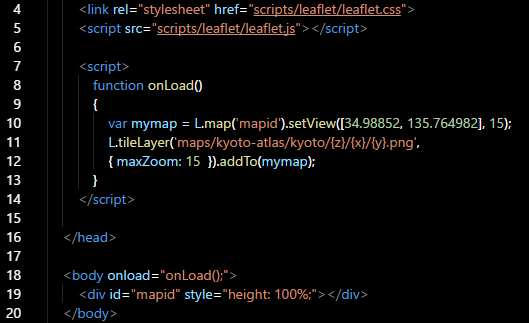
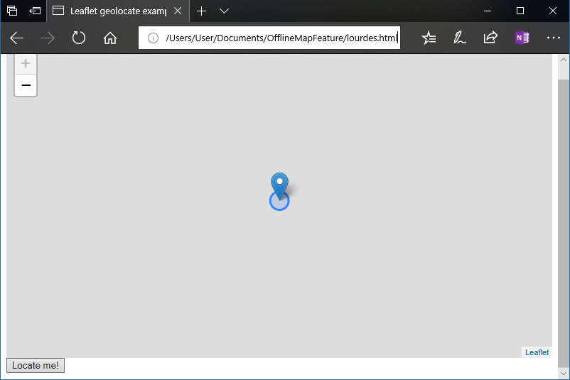
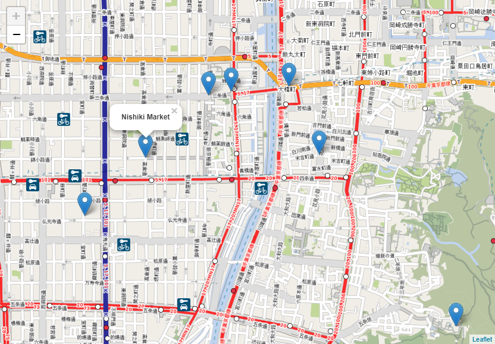

Normally Microsoft's Map application on a Lumia device is perfect for travelling, but it turns out there isn't an offline map available for Japan. After trying several alternatives, I figured that I could maybe create something better as a feature to my side project. I needed this to be compatible with the Edge browser, and for it to function effectively without a WiFi connection. Is this achievable using just HTML5, CSS and JavaScript? Yes, it is.
Creating the Offline Map Files
The first thing we need is data, in the form of map tiles, and the easiest way of getting this is by generating them using the
Mobile Atlas Creator. This is straightforward to use - simply select the region to map and the zoom levels the application would display (e.g. all of them), and create the atlas .zip archive. The archive contains sets of numbered directories and files - I'll explain why they're structured that way and how they're read by the application. For the data source, '
OpenStreetMap Public Transport' gave the clearest tile images.
Leaflet.js API
There are multiple JavaScript APIs for rendering maps in the browser and showing the current GPS position. I went with
Leaflet.js, as it's lightweight, functional and reasonably well-documented.
This is roughly how Leaflet.js does the rendering: Leaflet.js will select the images to display according to the co-ordinates set in the code. The API will translate the co-ordinates into two five-digit numbers to select the file paths of the tiles to display. There is a third variable, which is the zoom level and layer - this determines the root directory that Leaflet.js will fetch the tiles from.

The three aforementioned factors are variables,
z,
x and
y in the code. These correspond to the zoom level, latitude and longitude. All three are initially determined by the
setview() parameters - the default zoom level and initial map frame displayed, but they're changed by the JavaScript controls as the user scrolls and zooms in and out.
Geolocation
Leaflet.js includes a feature that makes use of the browser's geolocation API. We include a button with this event trigger:
onClick="javascript:getLocationLeaflet();"
Which calls this function:
function getLocationLeaflet()
{
map.on('locationfound', onLocationFound);
map.on('locationerror', onLocationError);
map.locate({setView: true, maxZoom: 16});
}
Which, in turn, calls this function if the current location can be read from the device:
function onLocationFound(e)
{
var radius = e.accuracy / 2;
var location = e.latlng
L.marker(location).addTo(map)
L.circle(location, radius).addTo(map);
}

Of course, there's no map in the screenshot here, as there aren't any tiles for that location.
Location Markers
Another feature essential to my application is the ability to mark important locations on the map and display information about them. In this example, the placemark locations and popup messages are hard-coded into the JavaScript, though it should be possible to load that information from a
GeoJSON file without having to use something like Node.js (I'm still working on this).
With the markers, the
init() function should look something like this:
function init() {
map = new L.Map('map');
L.tileLayer('maps/kyoto-atlas/kyoto/{z}/{x}/{y}.png', { maxZoom: 15 })
.addTo(map);
map.setView(new L.LatLng(34.98852, 135.764982), 16);
L.marker([34.967169, 135.772437]).addTo(map)
.bindPopup('Fushimi Inari Shrine')
.closePopup();
L.marker([35.016917, 135.782388]).addTo(map)
.bindPopup('Heian Shrine')
.closePopup();
L.marker([35.008699, 135.767091]).addTo(map)
.bindPopup('Market Square')
.closePopup();
L.marker([34.985985, 135.741648]).addTo(map)
.bindPopup('Kyoto Railway Museum')
.closePopup();
}
Don't forget there is always the CSS file included with Leaflet.js.

It shouldn't matter whether the map files are replaced with something better from the Mobile Atlas Creator, as the co-ordinates within the JavaScript will always be mapped to the correct places.
To minimise the download size, I've published
this example on GitHub with map tiles for only one zoom level, but it's easy to recreate what I've done in the Mobile Atlas Creator.
References
AGAFONKIN, V. 2017. Leaflet: an open-source JavaScript library for mobile-friendly interactive maps. [WWW].
http://leafletjs.com/. (17th March 2018).
r_x. 2018. Mobile Atlas Creator.
SourceForge. [WWW].
https://sourceforge.net/projects/mobac/. (18th March 2018).